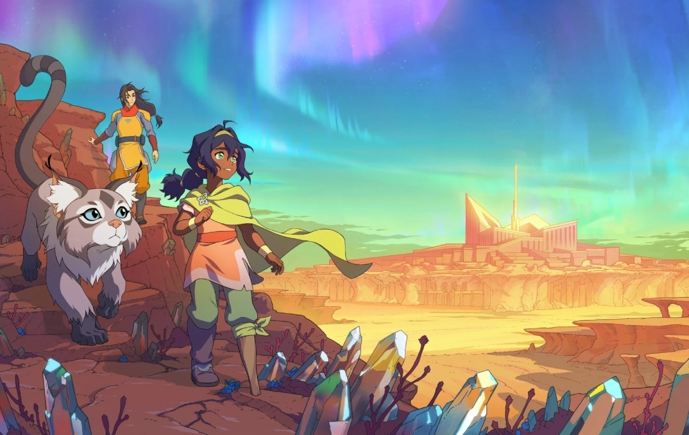

Tras un cataclismo global una niña descubre que es el nuevo Avatar - ahora señalada como la Destructora, no una salvadora. Cazada por humanos y espíritus, ella y su gemela perdida deben descubrir sus orígenes y salvar a la humanidad del colapso.